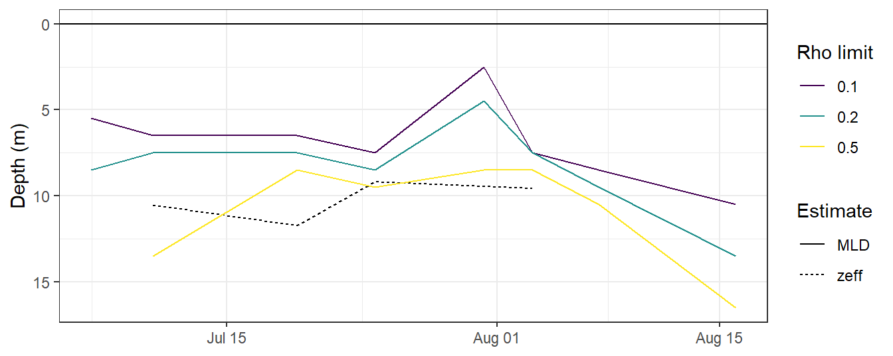
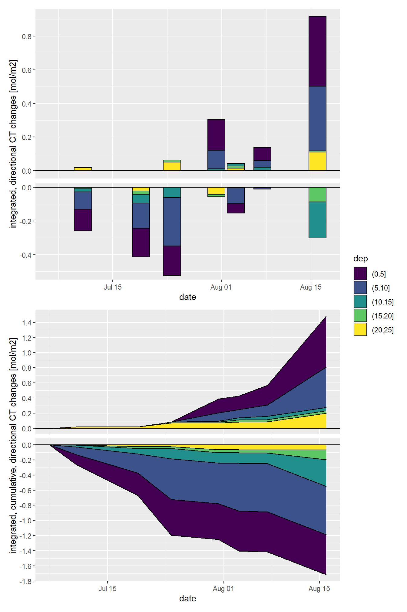
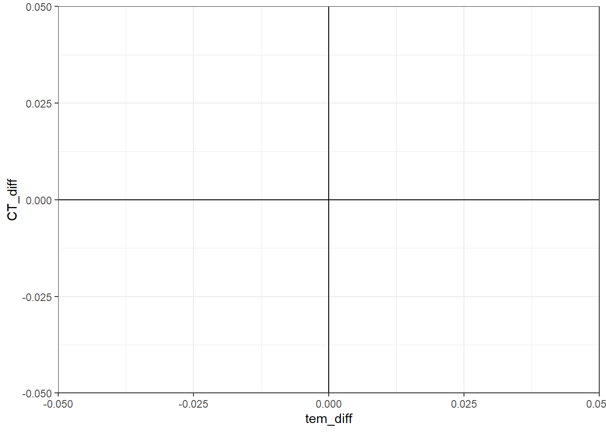
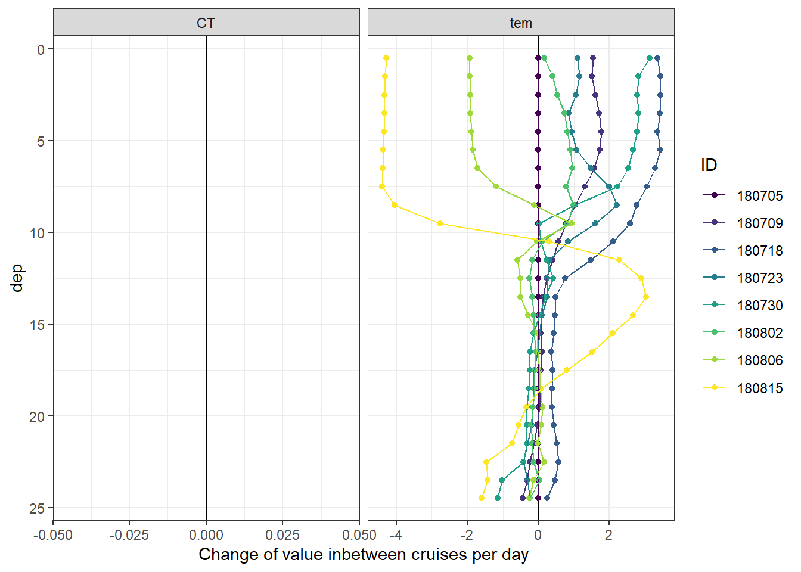
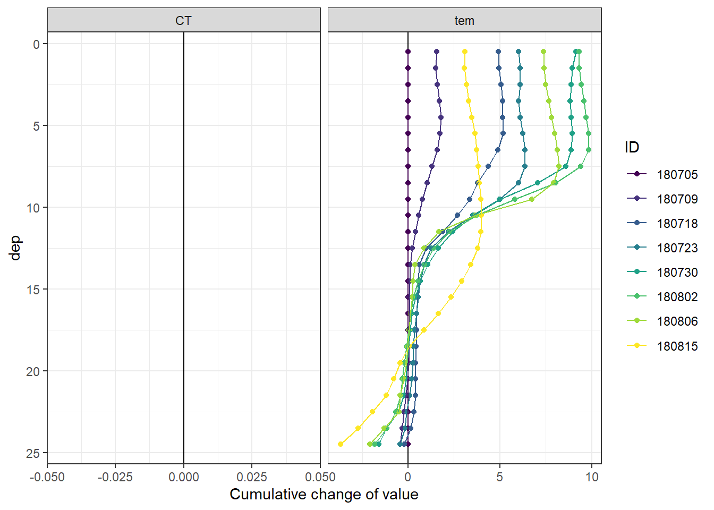
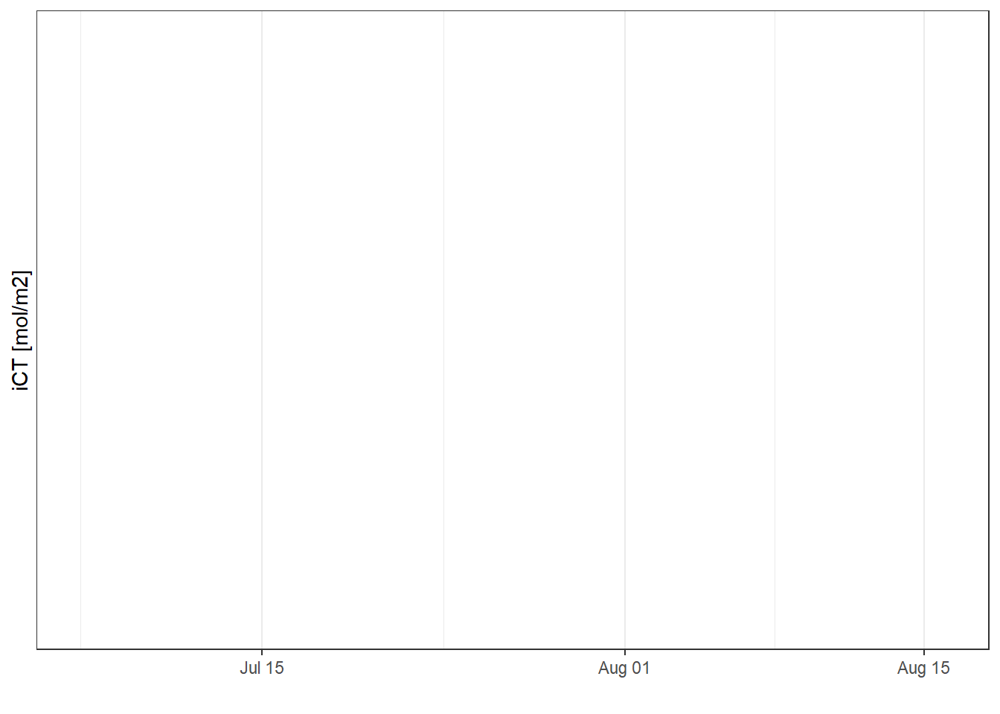

Last updated: 2020-03-31
Checks: 7 0
Knit directory: BloomSail/
This reproducible R Markdown analysis was created with workflowr (version 1.6.0). The Checks tab describes the reproducibility checks that were applied when the results were created. The Past versions tab lists the development history.
Great! Since the R Markdown file has been committed to the Git repository, you know the exact version of the code that produced these results.
Great job! The global environment was empty. Objects defined in the global environment can affect the analysis in your R Markdown file in unknown ways. For reproduciblity it’s best to always run the code in an empty environment.
The command set.seed(20191021) was run prior to running the code in the R Markdown file. Setting a seed ensures that any results that rely on randomness, e.g. subsampling or permutations, are reproducible.
Great job! Recording the operating system, R version, and package versions is critical for reproducibility.
Nice! There were no cached chunks for this analysis, so you can be confident that you successfully produced the results during this run.
Great job! Using relative paths to the files within your workflowr project makes it easier to run your code on other machines.
Great! You are using Git for version control. Tracking code development and connecting the code version to the results is critical for reproducibility. The version displayed above was the version of the Git repository at the time these results were generated.
Note that you need to be careful to ensure that all relevant files for the analysis have been committed to Git prior to generating the results (you can use wflow_publish or wflow_git_commit). workflowr only checks the R Markdown file, but you know if there are other scripts or data files that it depends on. Below is the status of the Git repository when the results were generated:
Ignored files:
Ignored: .Rhistory
Ignored: .Rproj.user/
Ignored: data/Finnmaid_2018/
Ignored: data/GETM/
Ignored: data/Maps/
Ignored: data/Ostergarnsholm/
Ignored: data/TinaV/
Ignored: data/_merged_data_files/
Ignored: data/_summarized_data_files/
Note that any generated files, e.g. HTML, png, CSS, etc., are not included in this status report because it is ok for generated content to have uncommitted changes.
There are no past versions. Publish this analysis with wflow_publish() to start tracking its development.
library(tidyverse)
library(seacarb)
library(oce)
library(marelac)
library(patchwork)
library(metR)In order to test how (and how well) the depth-integrated NCP estimates can be reproduced if only surface CO2 data were available, the BloomSail observations were restricted to those made in surface water and two reconstruction approaches were tested:
1m gridded, downcast profiles, from which CO2 data other than 3.5 m water depth were removed, were used.
ts_profiles_ID <-
read_csv(here::here("Data/_merged_data_files", "ts_profiles_ID_long_cum_MLD.csv"))
ts_profiles_ID <- ts_profiles_ID %>%
select(ID, date_time_ID, dep, CT = value, CT_diff = value_diff, CT_cum = value_cum, sign, rho_lim, MLD)
ts_profiles_ID <- ts_profiles_ID %>%
mutate(CT = if_else(dep == 3.5, CT, NaN),
rho_lim = as.factor(rho_lim))MLD calculation was previously described in the CT dynamics chapter.
For comparison to MLD, the effective penetration depth of NCP, zeff, was calculated as the ratio of the inremental, depth-integrated change of CT, divided by the change in surface CT, for all cases where the change in surface CT was negative.
ts_profiles_ID_surface <- ts_profiles_ID %>%
filter(sign=="neg",
rho_lim == "0.5",
dep == 3.5) %>%
group_by(ID, date_time_ID) %>%
summarise(CT_diff_surf = mean(CT_diff, na.rm = TRUE)) %>%
ungroup()
ts_profiles_ID_i <- ts_profiles_ID %>%
filter(sign=="neg",
rho_lim == "0.5") %>%
group_by(ID, date_time_ID) %>%
summarise(CT_diff_i = sum(CT_diff, na.rm = TRUE))
zeff <- inner_join(ts_profiles_ID_surface, ts_profiles_ID_i)
rm(ts_profiles_ID_surface, ts_profiles_ID_i)
zeff <- zeff %>%
mutate(zeff = CT_diff_i / CT_diff_surf)ts_profiles_ID %>%
ggplot()+
geom_hline(yintercept = 0)+
geom_line(data = zeff, aes(date_time_ID, zeff, linetype="zeff"))+
geom_line(aes(date_time_ID, MLD, col=rho_lim, linetype="MLD"))+
scale_y_reverse()+
scale_color_viridis_d(name="Rho limit")+
scale_linetype(name="Estimate")+
labs(y="Depth (m)")+
theme(axis.title.x = element_blank())
rm(zeff)Integrated CT depletion was calculated as the product of observed incremental CT changes in surface waters and the respective mixed layer depth.
ts_profiles_ID_surface <- ts_profiles_ID %>%
filter(dep==3.5) %>%
group_by(rho_lim) %>%
arrange(date_time_ID) %>%
mutate(iCT_diff = CT_diff * MLD / 1000,
iCT_cum = cumsum(replace_na(iCT_diff, 0))) %>%
ungroup()Total incremental and cumulative CT changes inbetween cruise dates were calculated.
p_iCT <- ts_profiles_ID_surface %>%
ggplot(aes(date_time_ID, iCT_diff, fill= rho_lim))+
geom_hline(yintercept = 0)+
geom_col(col="black", position = "dodge")+
scale_y_continuous(breaks = seq(-100, 100, 0.2))+
scale_fill_viridis_d()+
labs(y="integrated CT changes [mol/m2]")+
theme(axis.title.x = element_blank())
p_iCT_cum <- ts_profiles_ID_surface %>%
ggplot(aes(date_time_ID, iCT_cum,
col=rho_lim))+
geom_line()+
geom_hline(yintercept = 0)+
scale_color_viridis_d()+
scale_y_continuous(breaks = seq(-100, 100, 0.2))+
theme(strip.background = element_blank(),
strip.text = element_blank())+
labs(y="integrated, cumulative CT changes [mol/m2]", x="date")
(p_iCT / p_iCT_cum)+
plot_layout(guides = 'collect')
rm(p_iCT, p_iCT_cum)
rm(ts_profiles_ID, ts_profiles_ID_surface)ts_profiles_ID <-
read_csv(here::here("Data/_merged_data_files", "ts_profiles_ID.csv"))
ts_profiles_ID <- ts_profiles_ID %>%
mutate(CT = if_else(dep == 3.5, CT, NaN),
ID = as.factor(ID))As primary production (negative changes in CT) and increase in seawater temperature have a common driver (light), the relation between both changes was investigated.
ts_profiles_ID_diff <- ts_profiles_ID %>%
drop_na() %>%
arrange(date_time_ID) %>%
mutate(CT_diff = CT - lag(CT, default = first(CT)),
tem_diff = tem - lag(tem, default = first(tem)),
factor = CT_diff / tem_diff,
factor = if_else(is.na(factor), 0, factor))
ts_profiles_ID_diff %>%
ggplot(aes(tem_diff, CT_diff))+
geom_hline(yintercept = 0)+
geom_vline(xintercept = 0)+
geom_path()+
geom_point()
The ratio of the incremental change of CT with temperature at the seasurface was applied to calculate the CT in other water depth based on the known change in temperature.
ts_profiles_ID_diff <- ts_profiles_ID_diff %>%
select(ID, factor)
ts_profiles_ID <- full_join(ts_profiles_ID, ts_profiles_ID_diff)
rm(ts_profiles_ID_diff)
ts_profiles_ID <- ts_profiles_ID %>%
arrange(date_time_ID) %>%
group_by(dep) %>%
mutate(tem_diff = tem - lag(tem, default = first(tem))) %>%
ungroup()
ts_profiles_ID <- ts_profiles_ID %>%
mutate(CT_diff = tem_diff * factor) %>%
select(-factor)The reconstructed incremental changes are added up to derive cummulative CT changes throughout the water column.
ts_profiles_ID_long <- ts_profiles_ID %>%
select(ID, date_time_ID, dep, tem = tem_diff, CT = CT_diff) %>%
pivot_longer(4:5, names_to = "var", values_to = "value_diff") %>%
group_by(dep, var) %>%
arrange(date_time_ID) %>%
mutate(date_time_ID_diff = as.numeric(date_time_ID - lag(date_time_ID)),
date_time_ID_ref = date_time_ID - (date_time_ID - lag(date_time_ID))/2,
value_diff_daily = value_diff / date_time_ID_diff,
value_cum = cumsum(value_diff)) %>%
ungroup()Changes of seawater parameters at each depth were reconstructed from one cruise day to the next and divided by the number of days inbetween.
ts_profiles_ID_long %>%
arrange(dep) %>%
ggplot(aes(value_diff, dep, col=ID))+
geom_vline(xintercept = 0)+
geom_point()+
geom_path()+
scale_y_reverse()+
scale_color_viridis_d()+
facet_wrap(~var, scales = "free_x")+
labs(x="Change of value inbetween cruises per day")
Cumulative changes of seawater parameters were calculated at each depth relative to the first cruise day on July 5.
ts_profiles_ID_long %>%
arrange(dep) %>%
ggplot(aes(value_cum, dep, col=ID))+
geom_vline(xintercept = 0)+
geom_point()+
geom_path()+
scale_y_reverse()+
scale_color_viridis_d()+
labs(x="Cumulative change of value")+
facet_wrap(~var, scales = "free_x")
Hoevmoeller plots were generated for the reconstructed daily and cumulative changes in CT. Absolute values are not reproducible with this approach. Furthermore, it meets our expectations
bin_CT <- 2.5
ts_profiles_ID_long %>%
filter(var == "CT") %>%
ggplot()+
geom_contour_fill(aes(x=date_time_ID_ref, y=dep, z=value_diff_daily),
breaks = MakeBreaks(bin_CT),
col="black")+
geom_point(aes(x=date_time_ID, y=c(24.5)), size=3, shape=24, fill="white")+
scale_fill_divergent(breaks = MakeBreaks(bin_CT),
guide = "colorstrip",
name="CT (µmol/kg)")+
scale_y_reverse()+
theme_bw()+
labs(y="Depth (m)")+
coord_cartesian(expand = 0)+
theme(axis.title.x = element_blank(),
axis.text.x = element_blank())
rm(bin_CT)bin_CT <- 20
ts_profiles_ID_long %>%
filter(var == "CT") %>%
ggplot()+
geom_contour_fill(aes(x=date_time_ID, y=dep, z=value_cum),
breaks = MakeBreaks(bin_CT),
col="black")+
geom_point(aes(x=date_time_ID, y=c(24.5)), size=3, shape=24, fill="white")+
scale_fill_divergent(breaks = MakeBreaks(bin_CT),
guide = "colorstrip",
name="CT (µmol/kg)")+
scale_y_reverse()+
theme_bw()+
labs(y="Depth (m)")+
coord_cartesian(expand = 0)+
theme(axis.title.x = element_blank(),
axis.text.x = element_blank())
rm(bin_CT)Total incremental and cumulative CT changes inbetween cruise dates were calculated for the upper 10 m of the water body.
iCT_10 <- ts_profiles_ID_long %>%
filter(dep < 10,
var == "CT") %>%
select(ID, date_time_ID, date_time_ID_ref, CT_diff=value_diff, CT_cum=value_cum) %>%
group_by(ID, date_time_ID, date_time_ID_ref) %>%
summarise(CT_i_diff = sum(CT_diff)/1000,
CT_i_cum = sum(CT_cum)/1000) %>%
ungroup()
iCT_10 %>%
ggplot()+
#geom_point(data = cruise_dates, aes(date_time_ID, 0), shape=21)+
geom_col(aes(date_time_ID_ref, CT_i_diff),
position = "dodge", alpha=0.3)+
geom_line(aes(date_time_ID, CT_i_cum))+
scale_color_viridis_d(name="Depth limit (m)")+
scale_fill_viridis_d(name="Depth limit (m)")+
labs(y="iCT [mol/m2]", x="")+
theme_bw()
sessionInfo()R version 3.5.0 (2018-04-23)
Platform: x86_64-w64-mingw32/x64 (64-bit)
Running under: Windows 10 x64 (build 18363)
Matrix products: default
locale:
[1] LC_COLLATE=English_Germany.1252 LC_CTYPE=English_Germany.1252
[3] LC_MONETARY=English_Germany.1252 LC_NUMERIC=C
[5] LC_TIME=English_Germany.1252
attached base packages:
[1] stats graphics grDevices utils datasets methods base
other attached packages:
[1] metR_0.5.0 patchwork_1.0.0 marelac_2.1.9 shape_1.4.4
[5] seacarb_3.2.12 oce_1.2-0 gsw_1.0-5 testthat_2.3.1
[9] forcats_0.4.0 stringr_1.4.0 dplyr_0.8.3 purrr_0.3.3
[13] readr_1.3.1 tidyr_1.0.0 tibble_2.1.3 ggplot2_3.3.0
[17] tidyverse_1.3.0
loaded via a namespace (and not attached):
[1] nlme_3.1-137 bitops_1.0-6 fs_1.3.1
[4] lubridate_1.7.4 httr_1.4.1 rprojroot_1.3-2
[7] tools_3.5.0 backports_1.1.5 R6_2.4.0
[10] DBI_1.0.0 colorspace_1.4-1 withr_2.1.2
[13] sp_1.3-2 tidyselect_0.2.5 gridExtra_2.3
[16] compiler_3.5.0 git2r_0.26.1 cli_1.1.0
[19] rvest_0.3.5 xml2_1.2.2 labeling_0.3
[22] scales_1.0.0 checkmate_1.9.4 digest_0.6.22
[25] foreign_0.8-70 rmarkdown_2.0 pkgconfig_2.0.3
[28] htmltools_0.4.0 dbplyr_1.4.2 maps_3.3.0
[31] rlang_0.4.5 readxl_1.3.1 rstudioapi_0.10
[34] generics_0.0.2 jsonlite_1.6 RCurl_1.95-4.12
[37] magrittr_1.5 Formula_1.2-3 dotCall64_1.0-0
[40] Matrix_1.2-14 Rcpp_1.0.2 munsell_0.5.0
[43] lifecycle_0.1.0 stringi_1.4.3 yaml_2.2.0
[46] plyr_1.8.4 grid_3.5.0 maptools_0.9-8
[49] formula.tools_1.7.1 promises_1.1.0 crayon_1.3.4
[52] lattice_0.20-35 haven_2.2.0 hms_0.5.2
[55] zeallot_0.1.0 knitr_1.26 pillar_1.4.2
[58] reprex_0.3.0 glue_1.3.1 evaluate_0.14
[61] data.table_1.12.6 modelr_0.1.5 operator.tools_1.6.3
[64] vctrs_0.2.0 spam_2.3-0.2 httpuv_1.5.2
[67] cellranger_1.1.0 gtable_0.3.0 assertthat_0.2.1
[70] xfun_0.10 broom_0.5.3 later_1.0.0
[73] viridisLite_0.3.0 memoise_1.1.0 fields_9.9
[76] workflowr_1.6.0 ellipsis_0.3.0 here_0.1